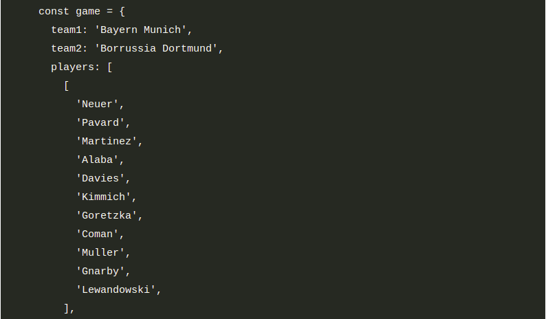
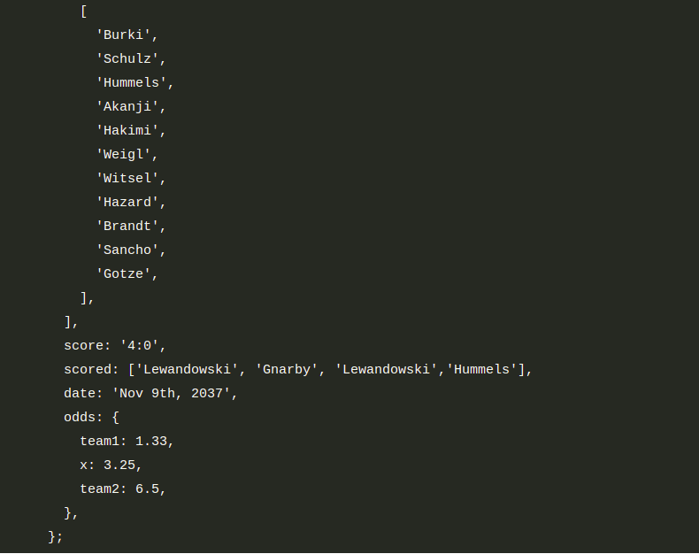
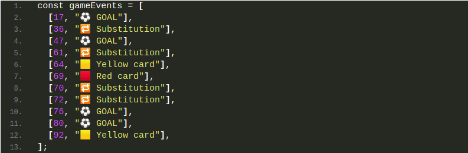

💪 Challenge13 : football app
On va créer une app de paris foot !
Supposons que nous récupérons les données d’un service web à propos d’un certain jeu (variable ‘game’ dans le code en dessous). Dans ce challenge, on va travailler avec ces données.
🏁 Exercice 1
Tâches :
- Créer un tableau de joueurs pour chaque équipe (variables ‘players1’ et ‘players2’).
- Le premier joueur dans un tableau de joueurs est le gardien et les autres sont des joueurs de terrain. Pour l’équipe 1 (le Bayern de Munich), créer une variable ‘gk’ avec le nom du gardien et un tableau ‘fieldPlayers’ avec le reste des joueurs de l’équipe.
- Créer un tableau ‘allPlayers’ qui contient les joueurs de chaque équipe (22 joueurs).
- Pendant le match, le Bayern utilise 3 joueurs remplaçants. Créer un autre tableau ‘players1Final’ contenant tous les joueurs de l’équipe originelle ainsi que ‘Thiago’ ‘Coutinho’ et ‘Perisic’.
- Basé sur l’objet game.odds, créer une variable pour chaque probabilité (appelés ‘team1’, ‘draw’ et ‘team2’).
- Écrire une fonction ‘printGoals’ qui prends un nombre arbitraire de joueurs et qui écrit chacun d’eux dans la console , ainsi que le nombre total de buts.
- L’équipe avec la probabilité la plus basse est celle la plus susceptible de gagner. Écrire dans la console quelle équipe a le plus de chance de gagner.
Données :
 🏁 Exercice 2
Tâches :
- Faire une boucle sur le tableau game.scored et afficher dans la console chaque nom de butteur ainsi que le numéro du but : (Exemple : “But 1 : Lewanoski”).
- Faire une boucle qui calcule la moyenne des probabilités et l’écrire dans la console.
-
Afficher les 2 probabilités dans la console, mais dans un joli
format comme ceci
Probabilité de victoire pour Bayern Munich :1,33
Probabilité d’égalité : 3,25
Probabilité de victoire de Borussia Dortmund : 6,5
Bien récupérer les noms des équipes depuis l’objet ‘game’, ne pas les “hardcoder”. - Créer un objet appelé ‘scorers’ qui contient le nom des joueurs qui ont marqué en propriété et le nombre de buts qu’ils ont marqué en value. Exemple :
🏁 Exercice 3
Cette fois-ci, nous avons un tableau à 2 dimensions appelé ‘gameEvents’ (voir en dessous) avec le log de tous les évènements qui se sont passés pendant le match. La première case d’un sous-tableau correspond à la minute de l’évènement, la 2ème case correspond au type d’évènement.
Tâches :
- Créer un tableau ‘events’ des différents évènements qui se sont déroulés (pas de doublon !).
- Après que le jeux soit fini, on a décidé que le carton jaune de la minute 64 n’était pas juste, Le supprimer du log d’évènements.
- Calculer et afficher ce texte dans la console : “Un évènement est apparu en moyenne toutes les 9 minutes”. (Un jeu de foot dure 90 minutes).
-
Faire une boucle sur ‘gameEvents’ et afficher pour chaque élément
dans la console s’il s’est déroulé dans la première ou deuxième
moitié du jeu :
[PREMIÈRE MOITIÉ] 17 . ⚽️ GOAL
Données :
